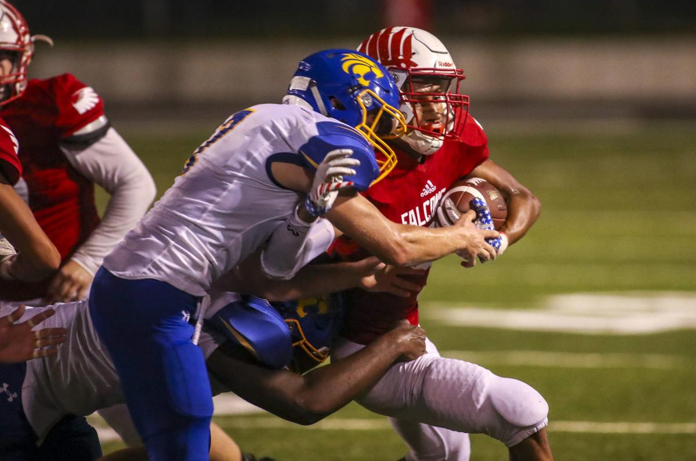
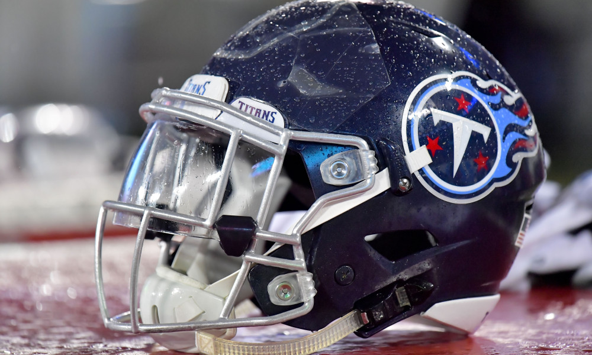
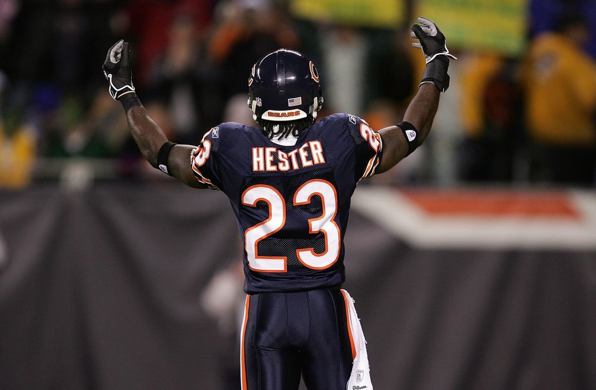

Football
My History of Football
I started playing football in the 3rd grade and have been playing ever since, it is my favorite sport. I play running back and defensive for West High School. When I was a kid I dreamed of starting varsity for West.

My Favorite Team
The Tennessee Titans is my favorite team, as they have my favorite running back Derrick Henry. They have Marcus Mariota at qaurter back, and Corey Davis as the main receiver. We have a really good defense with Malcom butler at corner, and Wesley Woodyard at linebacker. We should be really good next year with Delanie Walker being Healthy

My Favorite Player
Devin Hester is my favorite football player, because when I was a little kid hearing about Devin Hester got me into football. He was dangerous as a return man, if you kick it to him the other team is kicking an extra point 11 seconds later.

College
I hope to go to the University of Texas, cause they have a great Computer Science program. So I could pusure a computer science carreer while playing foot ball in college.